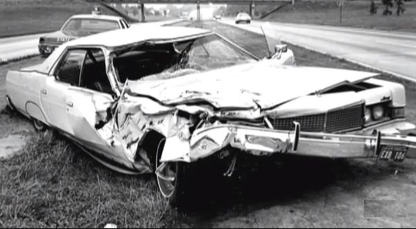
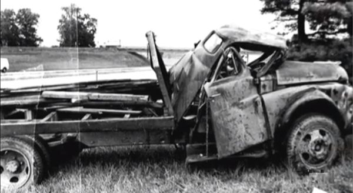
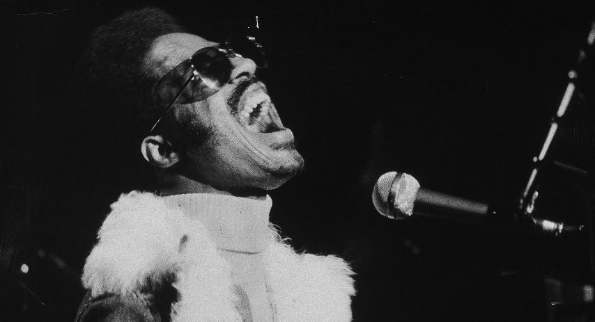

Si un 13 de mayo de 1950 supuso el nacimiento de un niño que iba a revolucionar el mundo de la
música, el 6 de agosto de 1973 supondría el renacimiento de un hombre bendecido por la fe en la vida y el amor hacia los demás. Nada hacía presagiar que esa fecha iba a marcar de una manera
tan profunda la vida de Stevie Wonder, pero así fue. Tres días después de publicar uno de los mejores álbumes de todos los tiempos -Innervisions-
Stevie Wonder padeció un accidente de tráfico que estuvo a punto de costarle la vida. Era un 6 de agosto de 1973,
iniciada la promoción del disco y tras haber tocado en Greeneville, viajaba por carretera junto a otro miembros del equipo dirección a Durham, en
Carolina del Sur. Él iba dormido en el asiento delantero del Mercury Cruiser de 1973, un coche de alquiler de Hertz conducido por su primo John
Harris. Viajaban detrás de un camión cargado de troncos. Algo imprevisto hizo que el camionero pisase el freno y ambos vehículos chocaron, impactando
en la cabeza de Stevie uno de los troncos que salieron despedidos del camión.


Los restantes miembros de la banda -que viajaban en dos vehículos más atrás- se detuvieron presos de
pánico al ver la escena. Un Stevie Wonder que no respondía sangrando abundantemente por la frente y cuero cabelludo. Inconsciente, fue trasladado
urgentemente al hospital en uno de los vehículos con una severa conmoción cerebral temiendose por su vida. Allí permaneció
en coma durante varios dias. Muchos periódicos lo dieron por muerto, y si conseguiría sobrevivir -relataban- tendría lesiones
irreparables y permanentes. El resto de los heridos, su primo y el conductor del camión Charlie Shepherd, fueron trasladados más tarde con heridas
menos graves por una ambulancia.
Pero pronto los médicos descartaron que pudiera tener secuelas serias del accidente, siendo su amigo y
director de gira Ira Tucker quien logró una primera respuesta de Stevie en su estado de coma. Ira Tucker comentó: "Recuerdo
cuando llegué al hospital en Winston-Salem ... hombre, ni siquiera podía reconocerlo. Tenía la cabeza hinchada hasta cerca de las cinco el
tamaño normal. Nadie había logrado comunicarse con él. Sabía que le gustaba escuchar música muy alto y pensé que tal vez si le gritaba al
oído..., el médico me dijo que lo intentara. La primera vez no recibí ninguna respuesta, pero al día siguiente volví y me acerqué al oído y
canté Higher Ground. Su mano descansaba sobre mi brazo y después de un rato sus dedos comenzaron a irse. al ritmo de la canción. ¡Dije que sí!
¡Yeeeeaaah! ¡Lo va a conseguir!".
Fue trasladado a Los Ángeles, donde inició una larga y dura convalescencia. Se percató que había perdido el sentido del olfato y el del
gusto. Este último logró recuperarlo, aunque la mayor preocupación de Stevie era si su habilidad como músico estaba intacta. De nuevo Ira Tucker
fue su motivador: "
Trajimos uno de sus instrumentos -creo que era el clavinet- al hospital. Por un tiempo, Stevie
simplemente se quedó bloqueado a su lado, no hizo nada con él. Se podía percibir su pánico a tocarlo, su nerviosismo y temor a haber perdido su
habilidad y simbiosis con el instrumento, no sabía si podría aún tocar y jugar con el teclado. Pero finalmente lo tocó, hombre, solo podías ver la
felicidad propagarse sobre él. Nunca lo olvidaré". Durante un año tuvo que medicarse para aliviar los fuertes dolores de cabeza, y
el gran cansancio quer lo aquejaba. Pero su
recuperación se puede considerar como milagrosa. Reforzó si cabe aún
más su fé y fuerza espiritual, cambiándole su forma de visionar el mundo que lo rodea, como así pudo percibirse en álbumes posteriores. Hablando de su
accidente decía que "
nunca se puede cambiar lo que ha sucedido, todo es de la manera que tiene que ser, y todo lo
que me ha pasado tenía que suceder", reafirmando su creencia de que todos tenemos un destino en la vida.

Stevie Wonder reapareció en público a finales de septiembre, tocando junto con Elton John en la ciudad de Boston. Era el concierto con el que Elton
John clausuraba su gira estadounidense. Los médicos habían prohibido excederse a Stevie en su actividad como músico. por lo que Stevie se mantuvo
apartado de más actuaciones dedicándose a su faceta compositiva para su nuevo álbum 'Fullfillingness' First Finale'. Fue ya el 20 de enero de 1974
cuando Stevie Wonder -ya bastante recuperado- inició con un concierto la gala discográfica internacional de Cannes, el MIDEM en Francia. Luego
viajó a Londres para un show en el Rainbow teatro, regresando después a Estados Unidos para recoger tres premios Grammy. La gira prevista antes del
accidente por 20 ciudades entre marzo y abril de 1974 quedó suspendida a excepción de la del Madison Square Garden a finales de marzo.
Allí
un emocionado Stevie Wonder miró al cielo, y enseñando sus cicatrices en la frente, dió gracias a Dios por estar vivo.
Lo divino sabía que Stevie tenía mucho por ofrecernos todavía, lo humano sabía nuestra necesidad de él, y surgió esa segunda oportunidad.
Un
milagro llamado Stevie Wonder que permitió que la humanidad ganase a un ser que revolucionara el concepto de la música soul, un ser
dedicado a transmitir el amor y la cordura en unos tiempos de por si críticos y dificiles de vivir.
Si nuestro destino ya está escrito en las estrellas, al pergamino estelar de Stevie Wonder le queda todavía mucho por mostrarnos. Mucho más amor que
repartir, muchas más emociones que compartir, y por qué no, todavía mucha más música con la que sorprendernos.